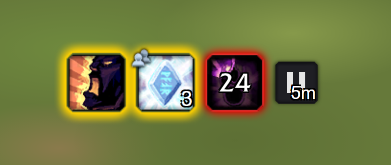
BuffNag 2.0
Shows an icon, and pings, while a buff you chose is missing on you or your party. Configured from a tab in the Cooldown Manager's settings. /bn
20 small addons for World of Warcraft Forever, each on its own. Every download is one zip with one folder.
To install: unzip into the game's Interface/AddOns folder, so that it holds a folder with the addon's name, then /reload or restart the game.

Shows an icon, and pings, while a buff you chose is missing on you or your party. Configured from a tab in the Cooldown Manager's settings. /bn
A list beside the inbox of every item and sum of money in your mail: take all, the money, or the rows you mark. One take at a time, C.O.D. never paid, stops cleanly on full bags. /bulkinbox
Unit tooltips you can read at a glance: one line per quest objective naming only who still needs it, names in class colour, and item and spell IDs while Alt is held.
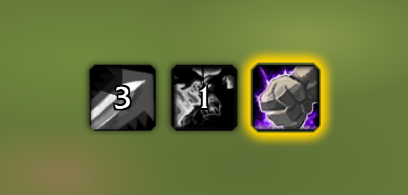
An icon pops up a few seconds before an ability you chose comes off cooldown, and stays a moment once it is ready. Configured from a tab in the Cooldown Manager's settings. /cdn
With a fishing pole equipped, double-click into the world to cast your line. /fish
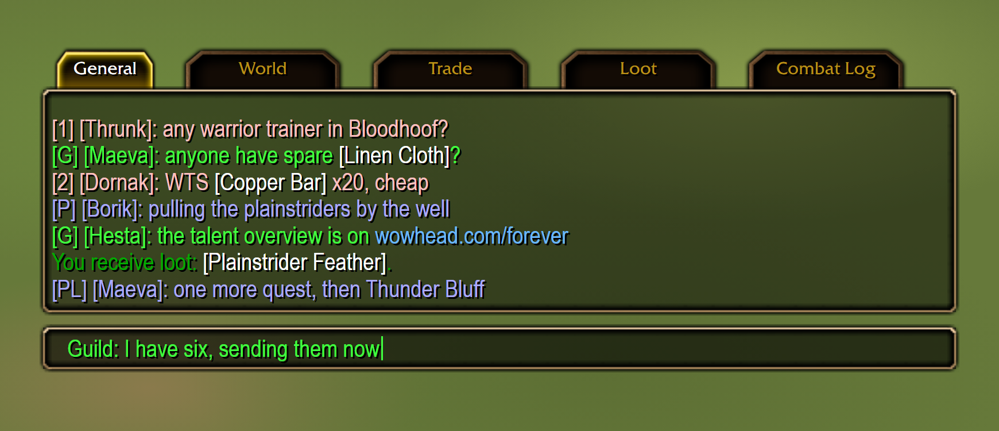
The default chat in Forever's own style, with short channel names and one chat setup shared by all your characters. /fchat
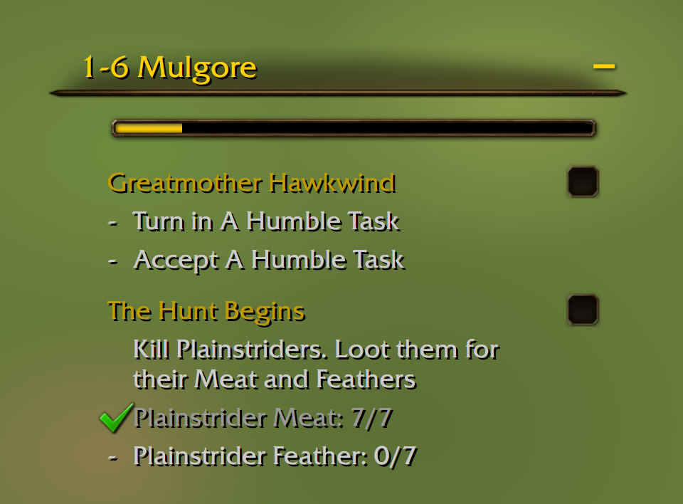
Leveling guides under the quest tracker. Reads RestedXP and WoW-Pro guides, tracks the quests of the current step, points an arrow and sets the map pin. /fg
Needs files that are not in the download; see the README.
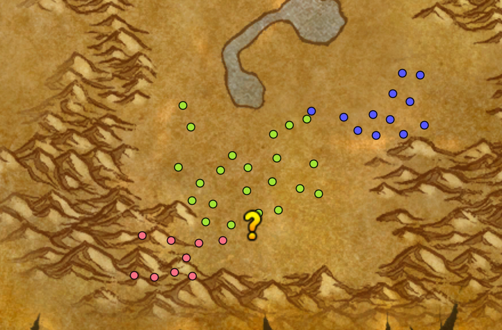
Quest log and tracking tweaks. Spawn dots for tracked quests on the map and minimap instead of the quest areas and in-progress icons. /fq
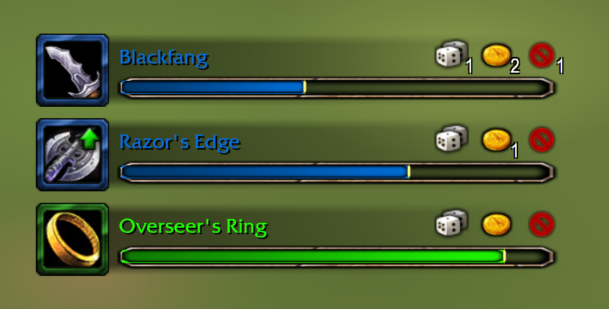
Movable group loot roll bars in the XLoot layout: icon, timer bar with the item name, Need/Greed/Pass with how many chose each and who (hover). /lootrolls
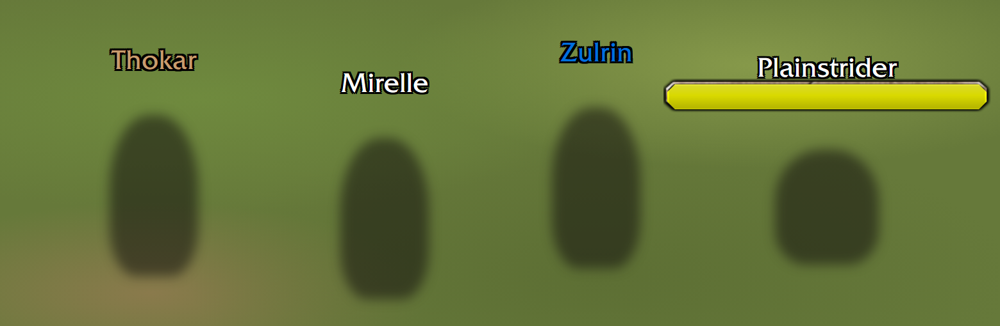
Friendly player nameplates show just the name: your font, size and position. /nameonly
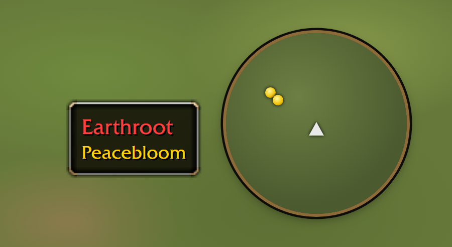
Colours a herb or ore node's name on the minimap tooltip red when your skill is too low to gather it.
Your pet's buffs and debuffs as small icons under the pet frame, drawn by the game's own aura buttons.
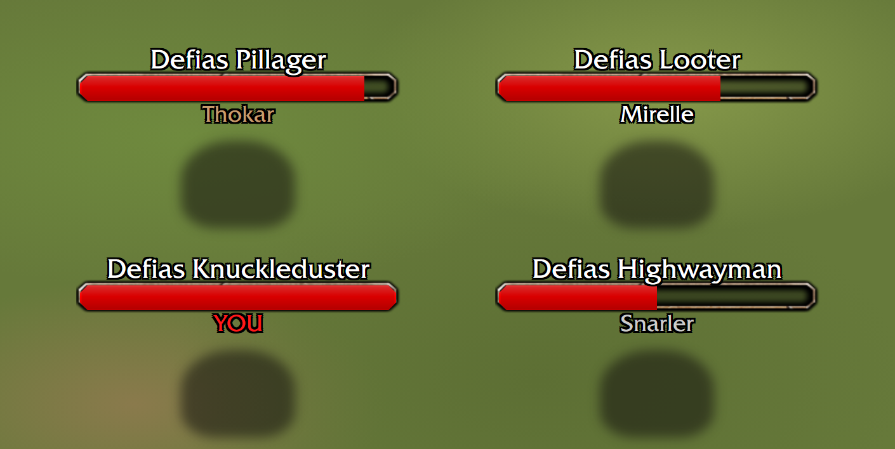
Enemy nameplates show who the enemy is targeting, under the bar (below the cast bar while casting); class colours; YOU when it is you, green for tanks, red otherwise.
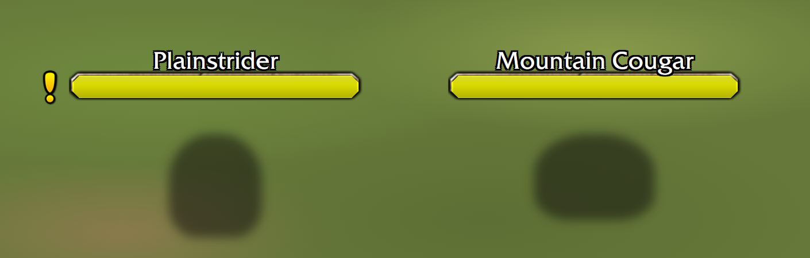
Marks the nameplates of enemies you still need for a quest.
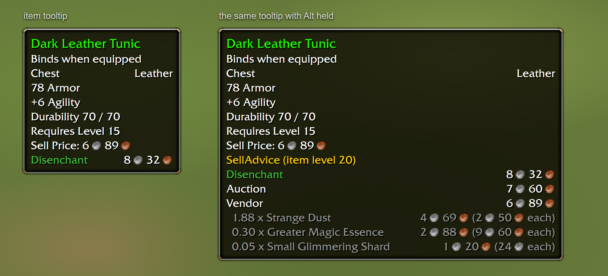
One line in item tooltips: disenchant, vendor or auction, whichever brings the most, from Auctionator's scanned prices. A gold coin marks the quest choice worth the most. Hold Alt for the workings.
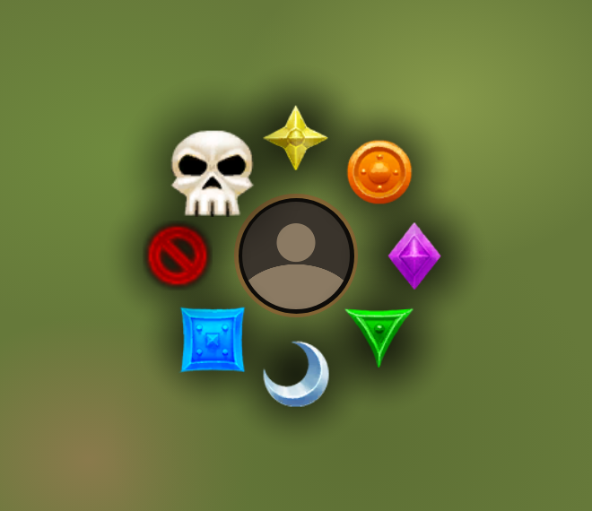
Modifier-click or double-click a unit to pick its raid target icon from a radial menu around the cursor. Out of combat only; key bindings work in combat.
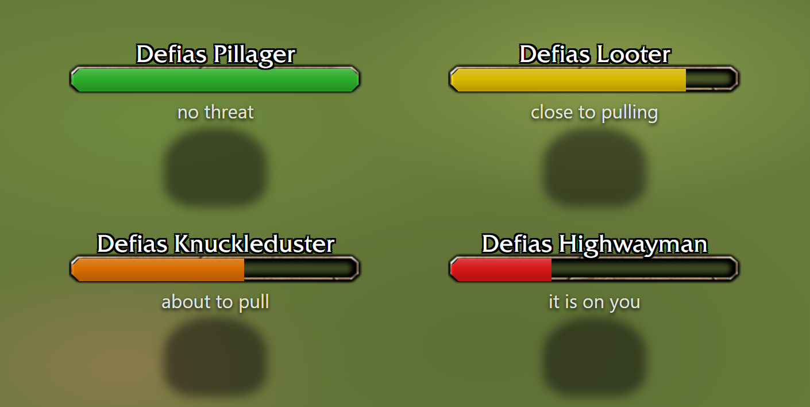
Enemy nameplate bars coloured by your threat: green, yellow, orange, red. /threatcolor
Puts the game's alert popups (loot you won, achievements and the like) where you want them. /toastanchor
Alternates minimap tracking between Find Herbs and Find Minerals every few seconds, so both kinds of node show up. /ts
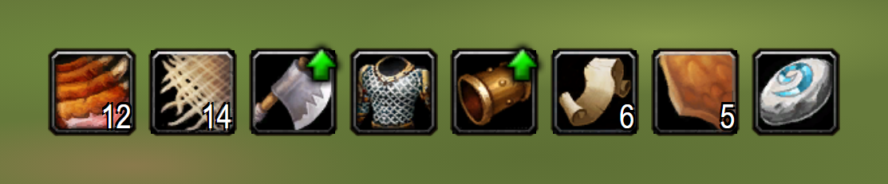
Pawn lite: a green arrow on items that would be an upgrade for your class and role, in Baganator's bags, quest rewards and LootRolls bars. /upgradearrow